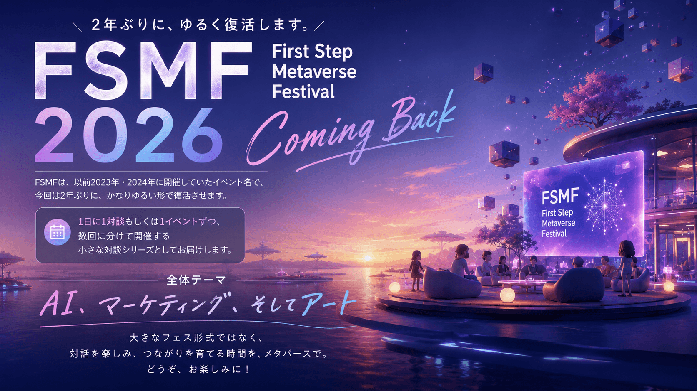

FSMF（First Step Metaverse Festival）2026、2年ぶりにゆるく復活します。
今回は大きなフェス形式ではなく、1日に1対談ずつ開催する、小さな対談シリーズとして再スタートします。

FSMF（First Step Metaverse Festival）は、2023年・2024年に開催していた、学際系のメタバース講演会イベントです。メタバース空間に集まり、分野を越えて学び、語り合う場として開催してきました。
そして2026年、FSMFは2年ぶりにゆるく復活します。
今回は大きなフェス形式ではありません。1日に1対談ずつ、数回に分けて、ひとつひとつのテーマを深く掘り下げていく「小さな対談シリーズ」として再スタートします。
AIによって、文章も画像も動画も、誰でも作れる時代になりました。情報発信やコンテンツ制作のハードルは、これからさらに下がっていきます。
だからこそ、これから問われるのは「何を作るか」「何を売るか」だけではありません。
FSMF2026では、メタバースという少し不思議な空間で、AI時代の学び、仕事、マーケティング、そしてアートについて考えていきます。
数十本のイベントを一気に開催するフェス形式ではありません。今回の第1弾・第2弾では、1つのテーマをじっくり掘り下げる対談形式で開催します。短時間で情報を浴びるのではなく、一生モノの「問い」を持ち帰る。そんな静かで深い時間を目指しています。
ひとつの共通言語としてイケハヤさんのマーケティング教材「明鏡」を手がかりにします。これからの学びや仕事に必要な「つながり」や、顧客との信頼関係の作り方など、売るだけでは届かない時代に、どうすれば選ばれる存在になれるのかを、実務家と研究者の対話から深く掘り下げます。
Zoomウェビナーのような一方通行の動画配信ではありません。アバターで参加し、同じ空間に集まり、対話の気配を感じながら学ぶ場です。初めての方も大歓迎。メタバースに慣れていなくても、まずは一歩入ってみるところから始めてみてください。
AIによって働き方や学び方が大きく変わる中で、逆に価値が増しているのが「人とのつながり」です。ただの名刺交換ではなく、学び合い、仕事が生まれ、ゆるく続いていく関係性。イケハヤさんのマーケティング教材「明鏡」と、坂本さんが大阪で立ち上げられる『 』& WORKPLACEを手がかりに、これからの学び・仕事・コミュニティづくりについて考えます。
AIによって情報発信やコンテンツ制作のハードルは大きく下がりました。誰でも発信できる時代だからこそ、ただ売るだけでは届きにくくなっています。これからのマーケティングでは、コミュニティ、リストマーケティング、顧客との関係づくりがますます重要になります。実務家であるイケハヤさんと、研究者である田中さんの対話を通じて、AI時代のマーケティング7.0を解き明かします。
FSMF2026では、第1弾・第2弾に続き、第3弾の開催を予定しています。詳細が決まり次第、順次お知らせします。第3弾以降の参加申込は、2026年6月中旬頃の開始を予定しています。
お申し込み後にメールで届く「イベント会場URL」をクリックするだけで、ブラウザが起動し入室できます。VRゴーグルや特殊な機材は不要です。普段のPCやスマートフォンからアクセス可能です。
会場に入ると、仮のアバターと名前の入力欄が表示されます。お好きなニックネームを入力するだけで、すぐにあなたの分身（アバター）が仮想空間に登場します。マイクやカメラの接続設定を求められますが、視聴のみの場合はオフのままで問題ありません。
PCの場合は「W, A, S, D」キーまたは「矢印」キーで移動し、マウスドラッグで視点を動かせます。スマホの場合は画面上のバーチャルジョイスティックとスワイプで簡単に操作可能です。ステージに近づくと対談の音声が聞こえてきます。
A. 完全無料でご参加いただけます。
A. スマホアプリからも参加可能です。ただし、より安定した描画や快適な空間操作を行いたい場合は、PC（ブラウザ）からのアクセスを強くおすすめいたします。
A. はい、ご都合に合わせて自由に入退室いただけます。ただ、リアルタイムの熱量や空気感をお楽しみいただくため、なるべく開始時間からのご参加をおすすめします。